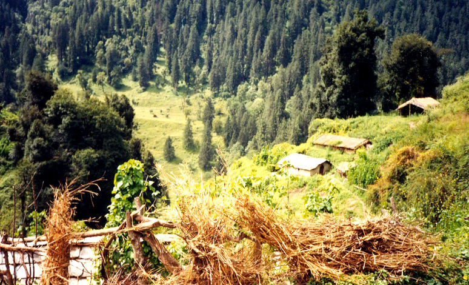
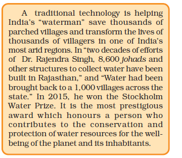

‘Living in harmony with nature’ is not new to us. Sustainable living has always been an integral part of India’s tradition and culture. It has been integrated with our long-lasting traditions and practices, customs, art and crafts, festivals, food, beliefs, rituals and folklore. Ingrained within us is the philosophy that ‘entire natural world be in harmony’ which is reflected in the famous phrase in Sanskrit ‘Vasudhaiv kutumbakam’ that means “the entire earth is one family”. The phrase is mentioned in ‘Mahaupanishad’, that is probably a part of the ancient Indian text, Atharva Veda.
In Class IX we have already learnt about some natural resources like soil, air and water and how various components are cycled over and over again in nature. Also, we learnt in the previous chapter about the pollution of these resources because of some of our activities. In this chapter, we shall look at some of our resources and how we are using them. Maybe we should also think about how we ought to be using our resources so as to sustain them and conserve our environment. We shall
be looking at our natural resources like forests, wildlife, water, coal and petroleum and see what are the issues at stake in deciding how these resources are to be managed for sustainable development along with the input from our traditional practices.
We often hear or read about environmental problems. These are often global-level problems and we feel helpless to make any changes. There are international laws and regulations, and then there are our own national laws and acts for environmental protection. There are also national and international organisations working towards protecting our environment.
Activity 16.1
Activity 16.2
Awareness about the problems caused by unthinkingly exploiting our resources has been a fairly recent phenomenon in our society. And once this awareness rises, some action is usually taken. You must have heard about the Ganga Action Plan. This multi-crore project came about in 1985 because the quality of the water in the Ganga was very poor (see Fig. 16.1). Coliform is a group of bacteria, found in human intestines, whose presence in water indicates contamination by disease-causing microorganisms.
Figure 16.1 Total coliform count levels in the Ganga
Source: Central Pollution Control Board, 2012
Do You Know?
Pollution of the Ganga
The Ganga runs its course of over 2500 km from Gangotri in the Himalayas to Ganga Sagar in the Bay of Bengal. It is being turned into a drain by more than a hundred towns and cities in Uttar Pradesh, Bihar and West Bengal that pour their garbage and excreta into it. Largely untreated sewage is dumped into the Ganges every day. In addition, think of the pollution caused by other human activities like bathing, washing of clothes and immersion of ashes or unburnt corpses. And then, industries contribute chemical effluents to the Ganga’s pollution load and the toxicity kills fish in large sections of the river.Namami Gange Programme is an Integrated Conservation Mission approved as a Flagship Programme by the Union Government in June, 2014. It was launched to accomplish the twin objectives of effective abatement of pollution conservation and rejuvenation of River Ganga. The National Mission for Clean Ganga is the implementation wing set up in October, 2016.
As you can see, there are some measurable factors which are used to quantify pollution or the quality of the water that we use for various activities. Some of the pollutants are harmful even when present in very small quantities and we require sophisticated equipment to measure them. But as we learnt in Chapter 2, the pH of water is something that can easily be checked using universal indicator.
Activity 16.3
we need not feel powerless or overwhelmed by the scale of the problems because there are many things we can do to make a difference. You must have come across the three R’s to save the environment: Reduce, Recycle and Reuse. What do they refer to?
Refuse: This means to say No to things people offer you that you don’t need. Refuse to buy products that can harm you and the environment, say No to single-use plastic carry bags.
Reduce: This means that you use less. You save electricity by switching off unnecessary lights and fans. You save water by repairing leaky taps. Do not waste food. Can you think of other things that you can reduce the usage of ?
Reuse: This is actually even better than recycling because the process of recycling uses some energy. In the ‘reuse’ strategy, you simply use things again and again. Instead of throwing away used envelopes, you can reverse it and use it again. The plastic bottles in which you buy various food-items like jam or pickle can be used for storing things in the kitchen. What other items can we reuse?
Repurpose: This means when a product can no more be used for the original purpose, think carefully and use it for some other useful purpose. For example, cracked crockery, or cups with broken handles can be used to grow small plants and as feeding vessels for birds.
Recycle: This means that you collect plastic, paper, glass and metal items and recycle these materials to make required things instead of synthesising or extracting fresh plastic, paper, glass or metal. In order to recycle, we first need to segregate our wastes so that the material that can be recycled is not dumped along with other wastes. Does your village/town/city have a mechanism in place for recycling these materials?
Even while making everyday choices, we can make environmentfriendly decisions. For doing this, we need to know more about how our choices affect the environment, these effects may be immediate or longterm or long-ranging. The concept of sustainable development encourages forms of growth that meet current basic human needs, while preserving the resources for the needs of future generations. Economic development is linked to environmental conservation. Thus sustainable development implies a change in all aspects of life. It depends upon the willingness of the people to change their perceptions of the socio-economic and environmental conditions around them, and the readiness of each individual to alter their present use of natural resources.
Activity 16.4
16.1 Why do we need to manage our resources?
Not just roads and buildings, but all the things we use or consume– food, clothes, books, toys, furniture, tools and vehicles – are obtained from resources on this earth. The only thing we get from outside is energy which we receive from the Sun. Even this energy is processed by living organisms and various physical and chemical processes on the earth before we make use of it.
Why do we need to use our resources carefully? Because these are not unlimited and with the human population increasing at a tremendous rate due to improvement in health-care, the demand for all resources is increasing at an exponential rate. The management of natural resources requires a long-term perspective so that these will last for the generations to come and will not merely be exploited to the hilt for short term gains. This management should also ensure equitable distribution of resources so that all, and not just a handful of rich and powerful people, benefit from the development of these resources.
Another factor to be considered while we exploit these natural resources is the damage we cause to the environment while these resources are either extracted or used. For example, mining causes pollution because of the large amount of slag which is discarded for every tonne of metal extracted. Hence, sustainable natural resource management demands that we plan for the safe disposal of these wastes too.
The present day global concerns for sustainable development and conservation of natural resources are of recent origin as compared to the long tradition and culture of nature conservation in our country. Principles of conservation and sustainable management were well established in the pre-historic India.
Our ancient literature is full of such examples where values and sensitivity of humans towards nature was glorified and the principle of sustainability was established at its best.
Activity 16.5
During the Vedic period, both productive as well as protective aspect of forest vegetation were emphasised. Agriculture emerged as a dominant economic activity during the later Vedic period. This was the time when the concept of cultural landscape such as sacred forests and groves, sacred corridors and a variety of ethno-forestry practices were evolved that continued to the post-Vedic period, besides a wide range of ethnoforestry practices were infused with the traditions, customs and rituals and followed as a means for protection of nature and natural resource
QUESTIONS
1. What changes can you make in your habits to become more environment-friendly?
2. What would be the advantages of exploiting resources with short-term aims?
3. How would these advantages differ from the advantages of using a long-term perspective in managing our resources?
4. Why do you think that there should be equitable distribution of resources? What forces would be working against an equitable distribution of our resources?
16.2 Forests and Wild Life
Forests are ‘biodiversity hot spots’. One measure of the biodiversity of an area is the number of species found there. However, the range of different life forms (bacteria, fungi, ferns, flowering plants, nematodes, insects, birds, reptiles and so on) found, is also important. One of the main aims of conservation is to try and preserve the biodiversity we have inherited. Experiments and field studies suggest that a loss of diversity may lead to a loss of ecological stability.
16.2.1 Stakeholders
Activity 16.5
We all use various forest produce. But our dependency on forest resources varies. Some of us have access to alternatives, some do not. When we consider the conservation of forests, we need to look at the stakeholders who are –
(i) the people who live in or around forests are dependent on forest produce for various aspects of their life (see Fig. 16.2).

Figure 16.2 A view of a forest life
(ii) the Forest Department of the Government which owns the land and controls the resources from forests.
(iii) the industrialists – from those who use ‘tendu’ leaves to make bidis to the ones with paper mills – who use various forest produce, but are not dependent on the forests in any one area.
(iv) the wild life and nature enthusiasts who want to conserve nature in its pristine form.
Let us take a look at what each of these groups needs/gets out of the forests. The local people need large quantities of firewood, small timber and thatch. Bamboo is used to make slats for huts, and baskets for collecting and storing food materials. Implements for agriculture, fishing and hunting are largely made of wood, also forests are sites for fishing and hunting. In addition to the people gathering fruits, nuts and medicines from the forests, their cattle also graze in forest areas or feed on other fodder which is collected from forests.
Do you think such use of forest resources would lead to the exhaustion of these resources? Do not forget that before the British came and took over most of our forest areas, people had been living in these forests for centuries. They had developed practices to ensure that the resources were used in a sustainable manner. After the British took control of the forests (which they exploited ruthlessly for their own purposes), these people were forced to depend on much smaller areas and forest resources started becoming over-exploited to some extent. The Forest Department in independent India took over from the British but local knowledge and local needs continued to be ignored in the management practices. Thus vast tracts of forests have been converted to monocultures of pine, teak or eucalyptus. In order to plant these trees, huge areas are first cleared of all vegetation. This destroys a large amount of biodiversity in the area. Not only this, the varied needs of the local people – leaves for fodder, herbs for medicines, fruits and nuts for food – can no longer be met from such forests. Such plantations are useful for the industries to access specific products and are an important source of revenue for the Forest Department.
Do you know how many industries are based on forest produce? A short count reveals timber, paper, lac and sports equipment.
Activity 16.7
Lastly, we come to the nature and wildlife enthusiasts who are in no way dependent on the forests, but who may have considerable say in their management. The conservationists were initially taken up with large animals like lions, tigers, elephants and rhinoceros. They now recognise the need to preserve biodiversity as a whole. But shouldn’t we recognise people as forming part of the forest system? There have been enough instances of local people working traditionally for conservation of forests. For example, the case of Bishnois community living in western Rajasthan on the border of the Thar desert. Conservation of forest and wildlife has been a religious tenet for them. These nature-loving people have for centuries, been conserving the flora and fauna to the extent of sacrificing their lives to protect the environment. They are living with the basic philosophy that all living things have a right to survive and share all resources. The Government of India has recently instituted an ‘Amrita Devi Bishnoi National Award for Wildlife Conservation’ in the memory of Amrita Devi Bishnoi, who in 1731 sacrificed her life along with 363 others for the protection of ‘khejri’ trees in Khejrali village near Jodhpur in Rajasthan.
Studies have shown that the prejudice against the traditional use of forest areas has no basis. Here is an example – the great Himalayan National Park contains, within its reserved area, alpine meadows which were grazed by sheep in summer. Nomadic shepherds drove their flock up from the valleys every summer. When this national park was formed, this practice was put to an end. Now it is seen that without the regular grazing by sheep the grass first grows very tall, and then falls over preventing fresh growth.
Management of protected areas, by keeping the local people out, by using force cannot possibly be successful in the long run. In any case, the damage caused to forests cannot be attributed to only the local people – one cannot turn a blind eye to the deforestation caused by industrial needs or development projects like building roads or dams. The damage caused in these reserves by tourists or the arrangements made for their convenience is also to be considered.
We need to accept that human intervention has been very much a part of the forest landscape. What has to be managed in the nature and what may be the extent of this intervention. Forest resources ought to be used in a manner that is both environmentally and developmentally sound – in other words, while the environment is preserved, the benefits of the controlled exploitation go to the local people, a process in which decentralised economic growth and ecological conservation go hand in hand. The kind of economic and social development we want will ultimately determine whether the environment will be conserved or further destroyed. The environment must not be regarded as a pristine collection of plants and animals. It is a vast and complex entity that offers a range of natural resources for our use. We need to use these resources with due caution for our economic and social growth, and to meet our material aspirations.
16.2.2 Management of forest
We need to consider if the goals of all the above stakeholders with regard to the management of the forests are the same. Forest resources are often made available for industrial use at rates far below the market value while these are denied to the local people. The Chipko Andolan (‘Hug the Trees Movement’) was the result of a grassroot level effort to end the alienation of people from their forests. The movement originated from an incident in a remote village called Reni in Garhwal, high-up in the Himalayas during the early 1970s. There was a dispute between the local villagers and a logging contractor who had been allowed to fell trees in a forest close to the village. On a particular day, the contractor’s workers appeared in the forest to cut the trees while the men folk were absent. Undeterred, the women of the village reached the forest quickly and clasped the tree trunks thus preventing the workers from felling the trees. Thus thwarted, the contractor had to withdraw.
Inherent in such a competition to control a natural resource is the conservation of a replenishable resource. Specifically the method of use was being called into question. The contractor would have felled the trees, destroying them forever. The communities traditionally lop the branches and pluck the leaves, allowing the resource to replenish over time. The Chipko movement quickly spread across communities and media, and forced the government, to whom the forest belongs, to rethink their priorities in the use of forest produce. Experience has taught people that the destruction of forests affected not just the availability of forest products, but also the quality of soil and the sources of water. Participation of the local people can indeed lead to the efficient management of forests.
An Example of People’s Participation in the Management of Forests
In 1972, the West Bengal Forest Department recognised its failures in reviving the degraded Sal forests in the southwestern districts of the state. Traditional methods of surveillance and policing had led to a ‘complete alienation of the people from the administration’, resulting in frequent clashes between forest officials and villagers. Forest and land related conflicts in the region were also a major factor in fuelling the militant peasant movements led by the Naxalites.
Accordingly, the Department changed its strategy, making a beginning in the Arabari forest range of Midnapore district. Here, at the insistence of a far-seeing forest officer, A.K. Banerjee, villagers were involved in the protection of 1,272 hectares of badly degraded sal forest. In return for help in protection, villagers were given employment in both silviculture and harvesting operations, 25 per cent of the final harvest, and allowed fuelwood and fodder collection on payment of a nominal fee. With the active and willing participation of the local community, the sal forests of Arabari underwent a remarkable recovery – by 1983, a previously worthless forest was valued Rs 12.5 crores.
Activity 16.8
(a) Building rest houses for tourists in national parks.
(b) Grazing domestic animals in national parks.
(c) Tourists throwing plastic bottles/covers and other litter in national parks.
QUESTIONS
1. Why should we conserve forests and wildlife?
2. Suggest some approaches towards the conservation of forests.
16.3 Water for All
Activity 16.9
Water is a basic necessity for all terrestrial forms of life. We studied in Class IX about the importance of water as a resource, the water cycle and how human intervention pollutes water bodies. However, human intervention also changes the availability of water in various regions.
Activity 16.10
After the above activity, would you be very surprised to learn that regions of water scarcity are closely correlated to the regions of acute poverty?
A study of rainfall patterns does not reveal the whole truth behind the water availability in various regions in India. Rains in India are largely due to the monsoons. This means that most of the rain falls in a few months of the year. Despite nature’s monsoon bounty, failure to sustain water availability underground has resulted largely from the loss of vegetation cover, diversion for high water demanding crops, and pollution from industrial effluents and urban wastes. Irrigation methods like dams, tanks and canals have been used in various parts of India since ancient times. These were generally local interventions managed by local people and assured that the basic minimum requirements for both agriculture and daily needs were met throughout the year. The use of this stored water was strictly regulated and the optimum cropping patterns based on the water availability were arrived at on the basis of decades/centuries of experience, the maintenance of these irrigation systems was also a local affair,
The arrival of the British changed these systems as it changed many other things. The conception of large scale projects – large dams and canals traversing large distances were first conceived and implemented by the British and carried on with no less gusto by our newly formed independent government. These mega-projects led to the neglect of the local irrigation methods, and the government also increasingly took over the administration of these systems leading to the loss of control over the local water sources by the local people.
More to Know!
Kulhs in Himachal Pradesh
Parts of Himachal Pradesh had evolved a local system of canal irrigation called kulhs over four hundred years ago. The water flowing in the streams was diverted into man-made channels which took this water to numerous villages down the hillside. The management of the water flowing in these kulhs was by common agreement among all the villages. Interestingly, during the planting season, water was first used by the village farthest away from the source of the kulh, then by villages progressively higher up. These kulhs were managed by two or three people who were paid by the villagers. In addition to irrigation, water from these kulhs also percolated into the soil and fed springs at various points. After the kulhs were taken over by the Irrigation Department, most of them became defunct and there is no amicable sharing of water as before.
16.3.1 Dams
Why do we seek to build dams? Large dams can ensure the storage of adequate water not just for irrigation, but also for generating electricity, as discussed in the previous chapter. Canal systems leading from these dams can transfer large amounts of water over great distances. For example, the Indira Gandhi Canal has brought greenery to considerable areas of Rajasthan. However, mismanagement of the water has largely led to the benefits being cornered by a few people. There is no equitable distribution of water, thus people close to the source grow water intensive crops like sugarcane and rice while people farther downstream do not get any water. The woes of these people who have been promised benefits which never arrived are added to the discontentment among the people who have been displaced by the building of the dam and its canal network.
In the previous chapter, we mentioned the reasons for opposition to the construction of large dams, such as the Tehri Dam on the river Ganga. You must have read about the protests by the Narmada Bachao Andolan (‘Save the Narmada Movement’) about raising the height of the Sardar Sarovar Dam on the river Narmada. Criticisms about large dams address three problems in particular –
(i) Social problems because they displace large number of peasants and tribals without adequate compensation or rehabilitation,
(ii) Economic problems because they swallow up huge amounts of public money without the generation of proportionate benefits,
(iii) Environmental problems because they contribute enormously to deforestation and the loss of biological diversity.
The people who have been displaced by various development projects are largely poor tribals who do not get any benefits from these projects and are alienated from their lands and forests without adequate compensation. The oustees of the Tawa Dam built in the 1970s are still fighting for the benefits they were promised.
16.3.2 Water Harvesting
Watershed management emphasises scientific soil and water conservation in order to increase the biomass production. The aim is to develop primary resources of land and water, to produce secondary resources of plants and animals for use in a manner which will not cause ecological imbalance. Watershed management not only increases the production and income of the watershed community, but also mitigates droughts and floods and increases the life of the downstream dam and reservoirs. Various organisations have been working on rejuvenating ancient systems of water harvesting as an alternative to the ‘mega-projects’ like dams. These communities have used hundreds of indigenous water saving methods to capture every trickle of water that had fallen on their land; dug small pits and lakes, put in place simple watershed systems, built small earthen dams, constructed dykes, sand and limestone reservoirs, set up rooftop water-collecting units. This has recharged groundwater levels and even brought rivers back to life.
Water harvesting is an age-old concept in India. Khadins, tanks and nadis in Rajasthan, bandharas and tals in Maharashtra, bundhis in Madhya Pradesh and Uttar Pradesh, ahars and pynes in Bihar, kulhs in Himachal Pradesh, ponds in the Kandi belt of Jammu region, and eris (tanks) in Tamil Nadu, surangams in Kerala, and kattas in Karnataka are some of the ancient water harvesting, including water conveyance, structures still in use today (see Fig. 16.3 for an example). Water harvesting techniques are highly locale specific and the benefits are also localised. Giving people control over their local water resources ensures that mismanagement and over-exploitation of these resources is reduced/removed.
Figure 16.3 Traditional water harvesting system — an ideal setting of the khadin system
In largely level terrain, the water harvesting structures are mainly crescent shaped earthen embankments or low, straight concrete-and-rubble “check dams” built across seasonally flooded gullies. Monsoon rains fill ponds behind the structures. Only the largest structures hold water year round; most dry up six months or less after the monsoons. Their main purpose, however, is not to hold surface water but to recharge the ground water beneath. The advantages of water stored in the ground are many. It does not evaporate, but spreads out to recharge wells and provides moisture for vegetation over a wide area. In addition, it does not provide breeding grounds for mosquitoes like stagnant water collected in ponds or artificial lakes. The ground-water is also relatively protected from contamination by human and animal waste.

QUESTIONS
1. Find out about the traditional systems of water harvesting/management in your region.
2. Compare the above system with the probable systems in hilly/mountainous areas or plains or plateau regions.
3. Find out the source of water in your region/locality. Is water from this source available to all people living in that area?
16.4 Coal and Petroleum
We have seen some of the issues involved in the conservation and sustainable use of resources like forests, wild-life and water. These can meet our needs perpetually if we were to use them in a sustainable manner. Now we come to yet another important resource – fossil fuels, that is, coal and petroleum, which are important sources of energy for us. Since the industrial revolution, we have been using increasing amounts of energy to meet our basic needs and for the manufacture of a large number of goods upon which our lives depend. These energy needs have been largely met by the reserves of coal and petroleum.
The management of these energy sources involves slightly different perspectives from those resources discussed earlier. Coal and petroleum were formed from the degradation of bio-mass millions of years ago and hence these are resources that will be exhausted in the future no matter how carefully we use them. And then we would need to look for alternative sources of energy. Various estimates exist as to how long these resources will last if the present rate of usage continues. It is estimated that our known petroleum resources will last us for about forty years and the coal resources will last for another two hundred years.
But looking to other sources of energy is not the only consideration when we look at the consumption of coal and petroleum. Since coal and petroleum have been formed from bio–mass, in addition to carbon, these contain hydrogen, nitrogen and sulphur. When these are burnt, the products are carbon dioxide, water, oxides of nitrogen and oxides of sulphur. When combustion takes place in insufficient air (oxygen), then carbon monoxide is formed instead of carbon dioxide. Of these products, the oxides of sulphur and nitrogen and carbon monoxide are poisonous at high concentrations and carbon dioxide is a green-house gas. Another way of looking at coal and petroleum is that they are huge reservoirs of carbon and if all of this carbon is converted to carbon dioxide, then the amount of carbon dioxide in the atmosphere is going to increase leading to intense global warming. Thus, we need to use these resources judiciously.
Activity 16.11
Some simple choices can make a difference in our energy consumption patterns. Think over the relative advantages, disadvantages and environment-friendliness of the following –
(i) Taking a bus, using your personal vehicle or walking/cycling.
(ii) Using LED bulbs or fluorescent tubes in your homes.
(iii) Using the lift or taking the stairs.
(iv) Wearing an extra sweater or using a heating device (heater or ‘sigri’) on cold days.
The management of coal and petroleum also addresses the efficiency of our machines. Fuel is most commonly used in internal combustion engines for transportation and recent research in this field concentrates on ensuring complete combustion in these engines in order to increase efficiency and also reduce air pollution.
Activity 16.12
• You must have heard of the Euro I and Euro II norms for emission from vehicles. Find out how these norms work towards reducing air pollution.
16.5 An Overview of Natural Resource Management
Sustainable management of natural resources is a difficult task. In addressing this issue, we need to keep an open mind with regard to the interests of various stakeholders. We need to accept that people will act with their own best interests as the priority. But the realisation that such selfish goals will lead to misery for a large number of people and a total destruction of our environment is slowly growing. Going beyond laws, rules and regulations, we need to tailor our requirements, individually and collectively, so that the benefits of development reach everyone now and for all generations to come.
What you have learnt
Exercises
1. What changes would you suggest in your home in order to be environment-friendly?
2. Can you suggest some changes in your school which would make it environment-friendly?
3. We saw in this chapter that there are four main stakeholders when it comes to forests and wildlife. Which among these should have the authority to decide the management of forest produce? Why do you think so?
4. How can you as an individual contribute or make a difference to the management of (a) forests and wildlife, (b) water resources and (c) coal and petroleum?
5. What can you as an individual do to reduce your consumption of the various natural resources?
6. List five things you have done over the last one week to –
(a) conserve our natural resources.
(b) increase the pressure on our natural resources.
7. On the basis of the issues raised in this chapter, what changes would you incorporate in your life-style in a move towards a sustainable use of our resources?